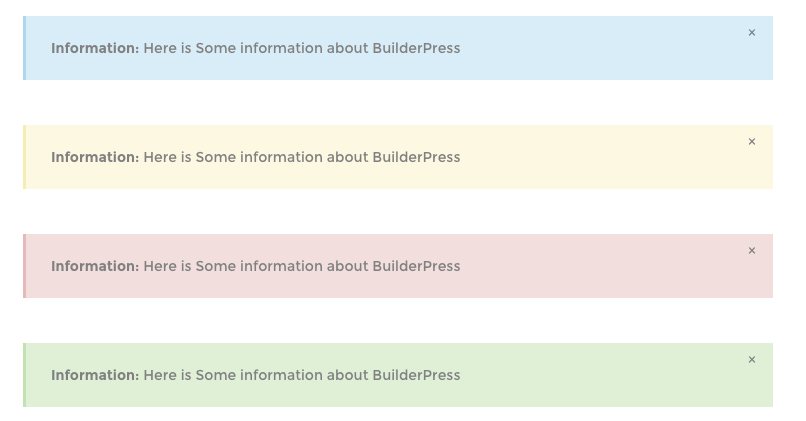

Caret List
[caret_list]
<ul>
<li>Caret list item one</li>
<li>Caret list item two</li>
<li>Caret list item three</li>
<li>Caret list item five</li>
</ul>
[/caret_list]
Buttons
[default_button link="link-here" target="_blank"]Button Default[/default_button]
[button_black_to_white link="link-here" target="_blank"]Button Default[/button_black_to_white]
[button_black_to_yellow link="link-here" target="_blank"]Button Default[/button_black_to_yellow]
[button_with_border link="link-here" target="_blank"]Button Default[/button_with_border]
[read_more_button link="#link-here" target="_blank"]Button Default[/read_more_button]
Messages
[info]<strong>Information:</strong> Here is Some information about BuilderPress[/info]
[tip]<strong>Information:</strong> Here is Some information about BuilderPress[/tip]
[error]<strong>Information:</strong> Here is Some information about BuilderPress[/error]
[success]<strong>Information:</strong> Here is Some information about BuilderPress[/success]

Columns
Single Column
[columns]
[single_column]This is One Half Column[/single_column]
[/columns]
Two Columns
[columns]
[one_half]This is One Half Column[/one_half]
[one_half]This is One Half Column[/one_half]
[/columns]
Three Columns
[columns]
[one_third]This is One Third Column[/one_third]
[one_third]This is One Third Column[/one_third]
[one_third]This is One Third Column[/one_third]
[/columns]
Four Columns
[columns]
[one_fourth]This is One Fourth Column[/one_fourth]
[one_fourth]This is One Fourth Column[/one_fourth]
[one_fourth]This is One Fourth Column[/one_fourth]
[one_fourth]This is One Fourth Column[/one_fourth]
[/columns]
Six Columns
[columns]
[one_sixth]This is One Sixth Column[/one_sixth]
[one_sixth]This is One Sixth Column[/one_sixth]
[one_sixth]This is One Sixth Column[/one_sixth]
[one_sixth]This is One Sixth Column[/one_sixth]
[one_sixth]This is One Sixth Column[/one_sixth]
[one_sixth]This is One Sixth Column[/one_sixth]
[/columns]
3/4 Column
[columns]
[three_fourth]This is Third-Fourth Column[/three_fourth]
[/columns]